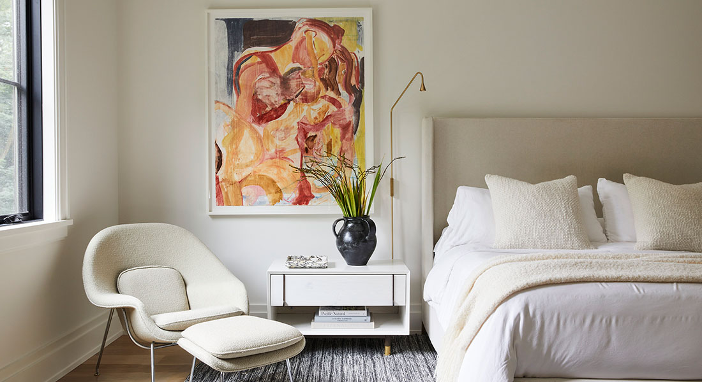

ТЕСТ: Качественный текстиль или подделка?
Какая расцветка постельного белья первой привлечет твое
внимание?
Что ты считаешь главным признаком достойного качества?
Как ты считаешь, сколько должен стоить хороший комплект
постельного белья?
Что однозначно говорит о низком качестве комплекта?
Постельное белье от какого производителя ты выберешь в подарок
друзьям?
Какой материал ты считаешь признаком «дешевого» постельного
белья?
Назови отличительные черты элитного текстиля:
Какой материал используют для пошива высококачественного
постельного белья?
Выбери утверждение, которое считаешь верным:
Может ли постельное белье хорошего качества окрашивать воду
при первой стирке?